Utiliser
l’écran Chantier
Préparer les besoins du client, organiser les ouvrages et établir le devis.
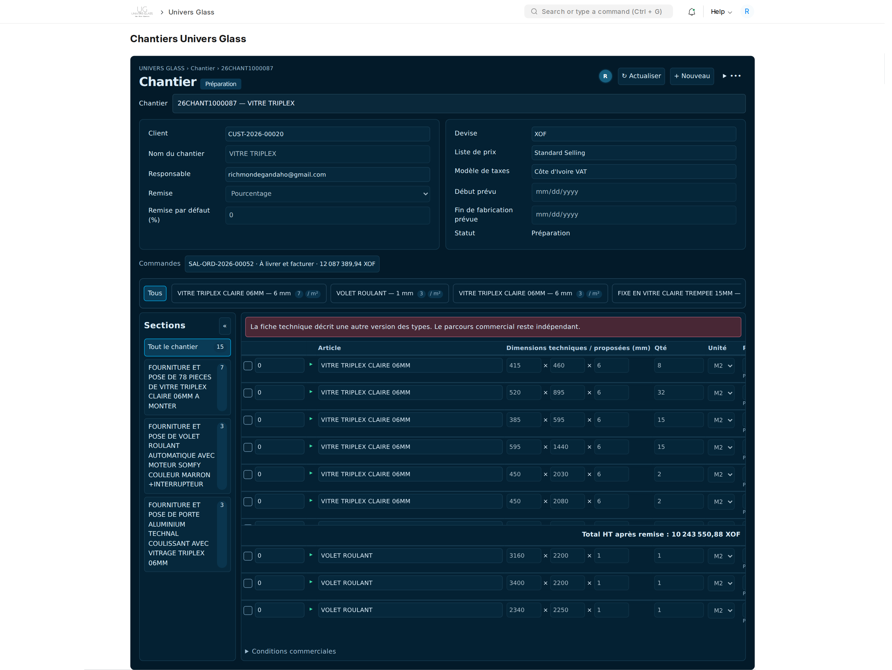
Pour les agents qui préparent les chantiers et les responsables qui les contrôlent et les valident.
Les captures proviennent de fimaci.f.frappe.cloud. Les exemples de saisie ont été préparés dans l’écran de production sans enregistrement. Aucun chantier, devis, commande ou mouvement de stock n’a été créé pour ce guide.
Repérer les zones de travail
Le chantier décrit le besoin commercial du client : les produits attendus, leurs dimensions, les prix et les prestations. La fiche technique définit ensuite la fabrication des découpes et ouvrages à produire.
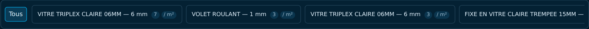
| Zone | Utilisation |
|---|---|
| En-tête | Client, responsable, devise, remise, modèle de taxes et dates. |
| Types | Désignation et épaisseur communes ; unité de prix et prestations par défaut. |
| Sections | Organisation du chantier : bâtiment, étage, façade, pièce… |
| Grille | Une ligne par dimension ou besoin à chiffrer. |
| Triangle vert | Afficher la section et les prestations de la ligne. |
| Menu ••• | Validation, devis, duplication, impression et autres actions autorisées. |
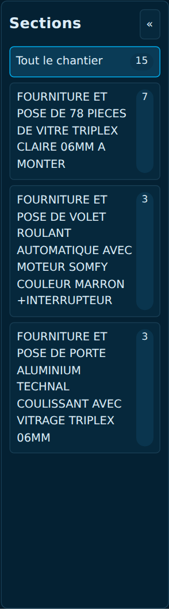
Créer ou retrouver un chantier
- Ouvrir Univers Glass → Chantiers. L’adresse directe est https://fimaci.f.frappe.cloud/app/chantiers.
- Pour reprendre un dossier, rechercher son numéro ou sa désignation dans le champ Chantier, puis choisir le résultat.
- Pour créer un dossier, cliquer sur + Nouveau. Renseigner la désignation, la société et le client ; préciser le responsable et les dates utiles.
- Choisir le modèle de taxes si nécessaire, puis Enregistrer. Le numéro de chantier est attribué automatiquement.
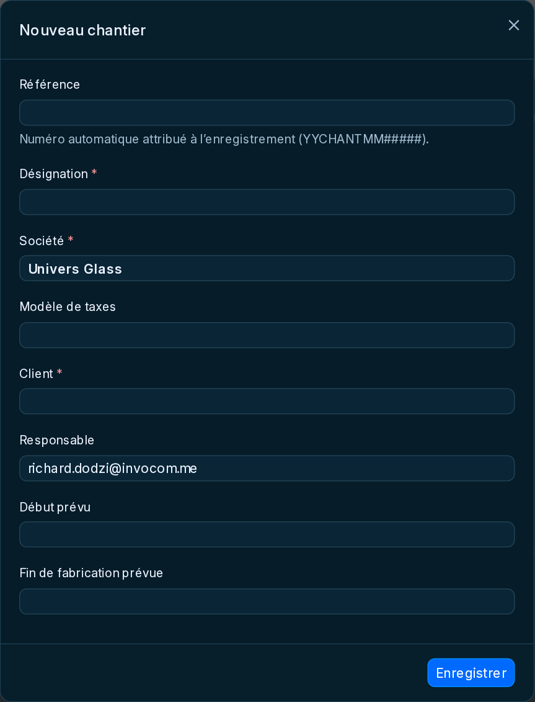
Compléter les informations commerciales
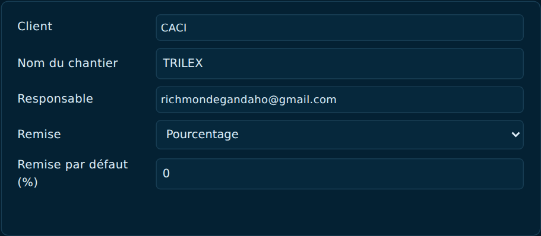
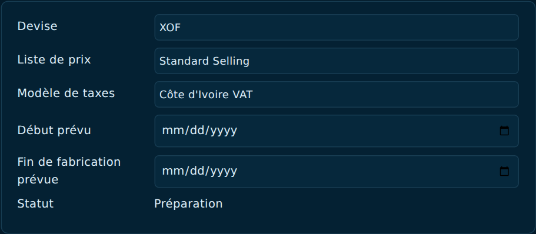
| Champ | À renseigner ou vérifier |
|---|---|
| Client et nom | Vérifier le client concerné et utiliser un nom de chantier facilement identifiable. |
| Responsable | Indiquer la personne chargée du suivi du dossier. |
| Devise et liste de prix | Contrôler la devise et la base tarifaire avant de saisir les prix. |
| Modèle de taxes | Sélectionner le modèle correspondant à la société et au dossier. Il est repris lors de la préparation du devis. |
| Dates | Renseigner le début prévu et la fin de fabrication prévue. |
Définir un type d’ouvrage
Pour les ouvrages à fabriquer, commencer par créer le type : une désignation commerciale compréhensible par le client, une épaisseur et une unité de prix par défaut.
- Cliquer sur + Type.
- Saisir ou rechercher la Désignation commerciale. Le champ propose des désignations existantes tout en permettant une saisie libre.
- Renseigner une épaisseur positive en millimètres, puis choisir PC ou M2.
- Cliquer sur Enregistrer dans la fenêtre : le type est ajouté à la saisie en cours. Enregistrer ensuite le chantier pour le conserver.
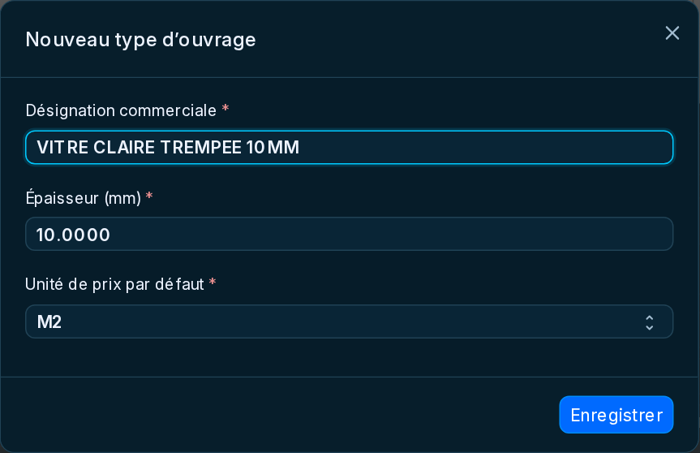
La bulle du type sert de filtre. Ses petits boutons permettent de modifier le type, d’ouvrir ses services et accessoires ou de le supprimer. Un type utilisé par des lignes doit être réaffecté avant de pouvoir être supprimé.
Saisir les lignes et choisir PC ou M2
- Sélectionner la bulle du type à utiliser, puis cliquer sur + Ajouter une ligne.
- Vérifier la description proposée. Saisir la longueur et la hauteur en millimètres ; l’épaisseur provient du type.
- Saisir la quantité de pièces, l’unité de prix et le prix unitaire.
- Ajouter les autres dimensions comme des lignes distinctes. Le bouton de duplication d’une ligne permet de reprendre une saisie proche.
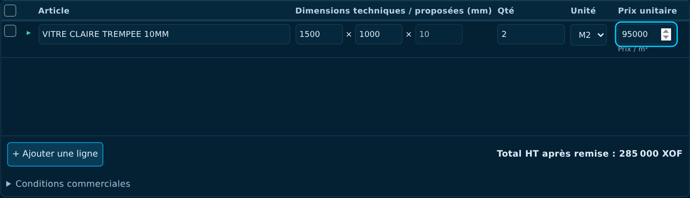
| Unité de prix | Calcul du montant HT avant remise |
|---|---|
| PC | Quantité de pièces × prix unitaire. |
| M2 | Quantité de pièces × (longueur en mm × hauteur en mm ÷ 1 000 000) × prix au m². |
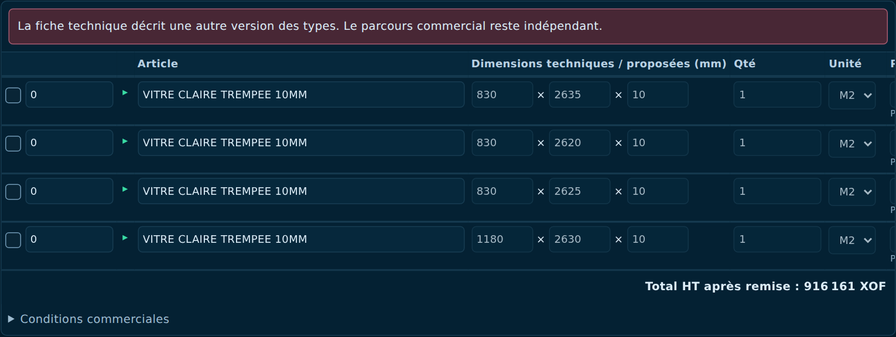
Appliquer les services et accessoires du type
Les prestations communes évitent de ressaisir les mêmes services et accessoires pour chaque dimension.
- Sur la bulle du type, cliquer sur l’icône Services et accessoires.
- Dans le volet de droite, rechercher et cocher les prestations utiles.
- Renseigner le prix unitaire par défaut et, selon la prestation, la quantité par pièce ou le coefficient.
- Cliquer sur Appliquer au type. Le volet se ferme ; les lignes de ce type héritent de ces prestations.
- Vérifier le résultat sur les lignes, puis Enregistrer le chantier.
Survolez la bulle du type pour consulter ses prestations communes et leurs valeurs par défaut.
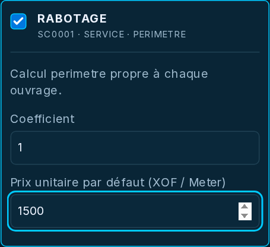
Voir le volet complet.</a>"/>
Consulter et ajuster une prestation de ligne
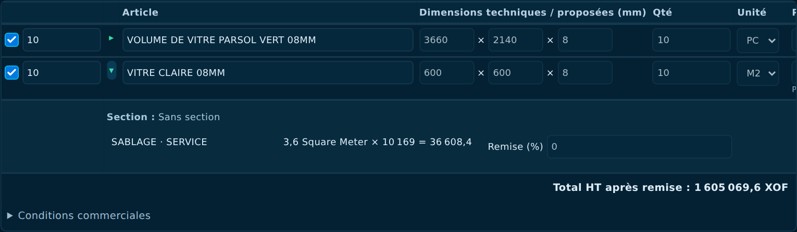
- Cliquer sur le triangle vert d’une ligne pour voir les prestations qui lui sont rattachées.
- Pour un ajout ou un ajustement, ouvrir l’icône Services / Accessoires de la ligne.
- Dans Compléments de ces lignes, ajuster la quantité, le prix, la remise ou le montant lorsque nécessaire.
- Pour ajouter une prestation, la cocher dans le catalogue puis cliquer sur Affecter à cet ouvrage. Pour plusieurs lignes cochées, utiliser Affecter aux ouvrages sélectionnés.
- Le volet se ferme après l’affectation. Enregistrer le chantier pour conserver les modifications.
Une prestation héritée du type est indiquée comme telle. Ses quantités et prix peuvent être ajustés pour une ligne ; les autres lignes conservent leurs propres valeurs.
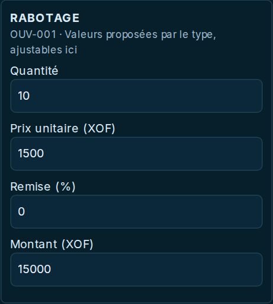
Voir le volet complet.</a>"/>
Organiser le chantier avec des sections
Les sections structurent le chantier et son impression : bâtiment, étage, façade ou pièce. Elles restent disponibles pendant la préparation du chantier, même après l’ajout des types et des lignes.
- Cliquer sur + Section. Saisir son nom et, si nécessaire, choisir une section parente.
- Pour ranger une ligne, utiliser son bouton Affecter une section. Les sections apparaissent alors à gauche avec une case de choix pour la ligne en cours.
- Choisir la section souhaitée puis terminer le choix. Enregistrer le chantier.
- Cliquer sur une section pour filtrer la grille ; Tout le chantier retire ce filtre. Le bouton « permet de replier le volet.
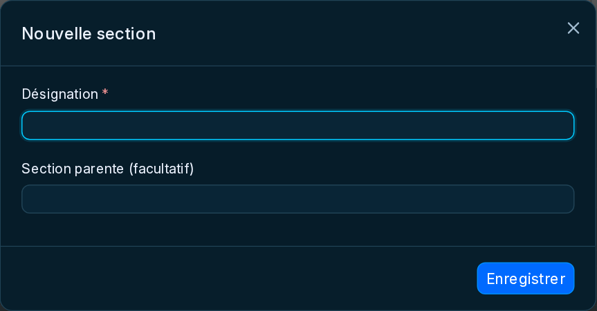
Traiter une vente directe
Une plaque entière, un accessoire ou un service vendu seul ne nécessite pas de type d’ouvrage ni de fiche technique. Il s’agit d’une vente directe.
- Cliquer sur Tous, à côté des bulles de types.
- Cliquer sur + Ajouter une ligne : la fenêtre de vente directe s’ouvre.
- Choisir l’article existant, saisir la quantité et le prix, et adapter la description si nécessaire.
- Enregistrer la fenêtre, puis le chantier.
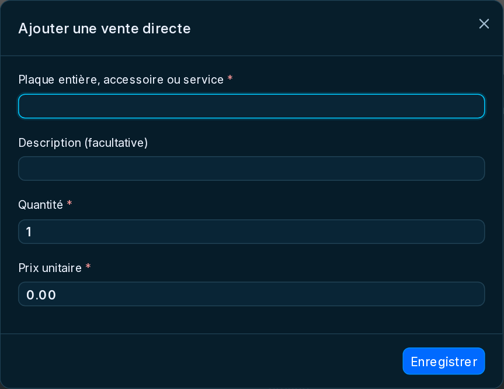
Gérer les remises
| Mode | Comportement attendu |
|---|---|
| Pourcentage | La remise par défaut est proposée sur les lignes et les prestations. Les montants des lignes sont calculés après cette remise. |
| Exception sur une ligne | Saisir la remise propre à cette ligne, par exemple 0 % lorsqu’elle est exclue de la remise générale. |
| Montant | La remise porte globalement sur le total. Les pourcentages de remise des lignes ne s’appliquent pas en plus. |
- Choisir le mode de remise dans l’en-tête et saisir sa valeur.
- Vérifier les exceptions dans la colonne Remise (%) des lignes et dans les prestations.
- Contrôler le Total HT après remise, puis enregistrer le chantier.
- Vérifier les remises et les taxes dans le devis et son impression.
Enregistrer et valider le chantier
- Contrôler le client, les types, les descriptions et les sections.
- Vérifier toutes les dimensions, quantités, unités PC/M2, prix et prestations. Contrôler le modèle de taxes et les remises.
- Cliquer sur Enregistrer. Attendre la fin de l’enregistrement.
- Dans le menu •••, choisir Valider le commercial, puis confirmer. Cette action nécessite le droit de validation.
- Le chantier validé peut servir à préparer le devis. Sa grille n’est plus modifiable comme un brouillon.
Le statut métier Préparation peut encore être affiché sur un chantier validé. Ne le confondez pas avec le badge Brouillon commercial : vérifiez la disponibilité des actions et le caractère modifiable de la grille.
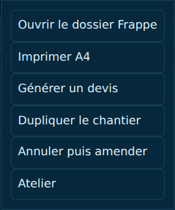
Préparer le devis puis la commande
- Dans le chantier validé, cocher les lignes à inclure au devis.
- Ajuster les quantités à deviser si vous ne traitez qu’une partie du besoin. Les quantités déjà reprises dans un devis actif sont prises en compte.
- Dans •••, choisir Générer un devis. Choisir s’il faut également le valider, puis lancer la génération.
- Contrôler le devis : descriptions, sections, dimensions, unités, services et accessoires, remises et taxes.
- Après acceptation client, préparer la commande depuis le devis ou le cockpit commercial. Choisir le circuit A ou B si cette option est autorisée.
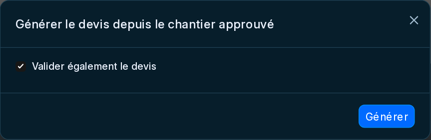
Dans le cockpit atelier, seules les lignes de fabrication dont la fiche technique est validée sont proposées. Une vente directe n’a pas à passer par cette préparation technique.
Dupliquer, actualiser ou amender
| Action | Utilisation |
|---|---|
| Dupliquer le chantier | Créer un nouveau brouillon à partir d’un chantier existant, puis adapter le client, les dimensions, les prix et les prestations. La copie reste dans la vue Chantier. |
| Actualiser | Recharger les données enregistrées sur le serveur. En présence de modifications locales, confirmer leur abandon uniquement si vous ne voulez pas les conserver. |
| Annuler puis amender | Sur un chantier validé admissible, annuler le document puis préparer sa révision en brouillon. |
| Amender | Depuis un chantier déjà annulé, créer son amendement si vos droits le permettent. |
| Imprimer A4 | Ouvrir l’impression du chantier. L’impression du devis se fait sur le devis, avec son format de devis. |
Travail à plusieurs
Les bulles d’utilisateurs indiquent les personnes présentes. Si un avertissement signale que le chantier a changé, vos saisies ne sont pas automatiquement écrasées. Vérifiez les changements avec les personnes concernées, puis utilisez Actualiser pour recharger la version du serveur.
Avant de quitter l’écran
Vérifier qu’aucun message Modifications non enregistrées ne subsiste. Les changements faits dans les fenêtres de types ou dans le volet des prestations doivent aussi être enregistrés sur le chantier.
Si une action est absente
Vérifier l’état du dossier, les modifications en attente et les droits du compte. Un chantier validé propose moins d’actions de saisie qu’un brouillon. Demander au responsable habilité de valider lorsque cette action n’est pas autorisée.